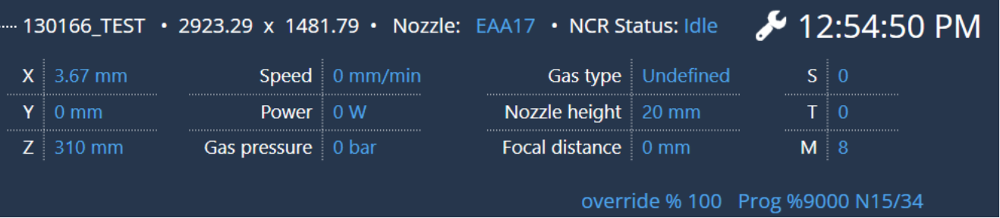
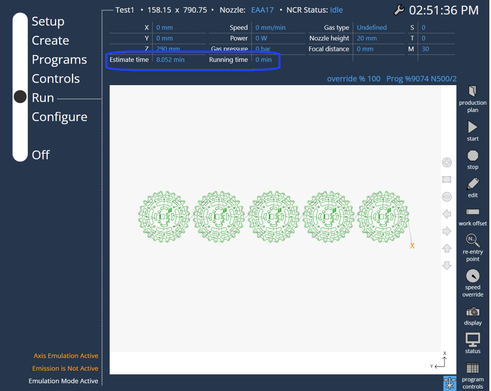

Ausführen
Programmwähler
Durch Auswählen des Programms und Betätigen des Tastenfelds Ausführen wird der Bediener zum Tab Ausführen geleitet. Der Programmname, das Maß, der NCR-Status und die Laserparameter (Achsendetails, Geschwindigkeit, Gasdruck, Leistung, Gasart, Düsenhöhe, Fokuslage, aktuelles Arbeitskoordinatensystem, Werkzeugkoordinatensystem, verwendete M-Funktion) werden oben angezeigt.
-
Start: Startet das Programm.
-
Pause: Pausiert das Programm. Diese Option ist nur verfügbar, wenn der Bediener das Programm startet.
-
Weiter: Setzt das angehaltene Programm fort.
-
Stopp oder Abbruch: Stoppt das Programm.
-
Bearbeiten: Bearbeitet das Programm. Navigiert zur bereits erwähnten Bearbeitungsseite des Programms.

LST/Layout-Programm wird wie folgt angezeigt:

DIN-Programm wird wie folgt angezeigt,

Die meisten Informationen sind selbsterklärend. Der Parameter auf der rechten Seite des Bildschirms zeigt die folgenden Informationen an:
S: Arbeitsversatz
T: Wert der Unterwerkzeugverschiebung
M: Aktive M-Funktion
Falls die Offlineprogrammierung eine Programmlaufzeit ausgibt, wird diese im Hauptbildschirm zusätzlich angezeigt.

Laufzeit (NetProcessingTime).
Zeit schätzen (siehe Daten aus der Offlineprogrammierung).
Die Zeitinformationen werden für das aktuelle aktive Signalprogramm aktualisiert. Einmal pro Programm startet die Zeitberechnung. Wenn ein neues Programm startet, wird sie zurückgesetzt.
Geschwindigkeits-Override
Mit Override + und Override - kann der Bediener die Geschwindigkeit von Achsenbewegungen beeinflussen (in Prozent).

-
Override + : Erhöht den Override-Prozentsatz für die konfigurierte/eingestellte Achse oder Fahrbahngeschwindigkeit. Oberhalb von 10 % wird der Wert in Schritten von 10 % geändert, unterhalb von 10 % wird er in Schritten von 1 % geändert.
-
Override -: Senkt den Override-Prozentsatz für die konfigurierte/eingestellte Achse oder Fahrbahngeschwindigkeit. Oberhalb von 10 % wird der Wert in Schritten von 10 % geändert, unterhalb von 10 % wird er in Schritten von 1 % geändert. Der Bediener kann zum Erhöhen oder Senken der Geschwindigkeit auch den Schieberegler verwenden.
Der Bediener kann bei laufender Maschine zwischen verschiedenen Tabs navigieren:
Der Bediener kann die Seite Ausführen auch dann verlassen, wenn die Maschine gerade die Tafel schneidet. Das kann erforderlich sein, weil sich der Bediener während des Programmlaufs vielleicht mit dem nächsten Satz von Programmen für die Produktion beschäftigen möchte (Programme bearbeiten, Laserparameter ändern usw.). Wenn der Bediener während des Programmlaufs die Tabs wechselt, wird zusätzlich ein Mini-Player angezeigt, damit der Bediener über den Stand des Programms, das gerade geschnitten wird, informiert ist, ohne zum Tab Ausführen wechseln zu müssen.
Anzeige
Der Bediener kann die Tafel- oder Maschinen- und Verfahranzeige in der Zeichnung ein- oder ausschalten.

Statische PLC-Meldungen werden in der linken unteren Ecke der Seite Ausführen angezeigt.
Status
Der Bediener kann die Informationen zum Programm- und Maschinenzustand überprüfen. Diese Informationen sind schreibgeschützt.

Programmsteuerungen
Der Bediener kann das Programm steuern, indem er die gewünschte Option wählt, wenn sich das Programm im Status Ausführen befindet. Die in den Programmsteuerungen gewählten Optionen werden in der unteren linken Ecke angezeigt.

Im DIN-Programm werden alle Optionen in der Programmsteuerung angezeigt.
Im LST/FXLYT-Programm werden nur drei Optionen angezeigt: